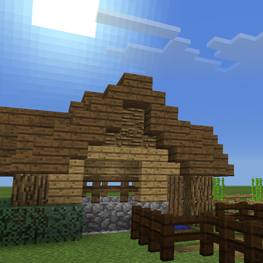

Vines in Minecraft
During Term 3 we designed and recreated vines in Minecraft
We learnt about spatial design, architecture design, cinematic framing, video editing, accessibility options such as captions, and how to use software like Minecraft Education and OpenShot